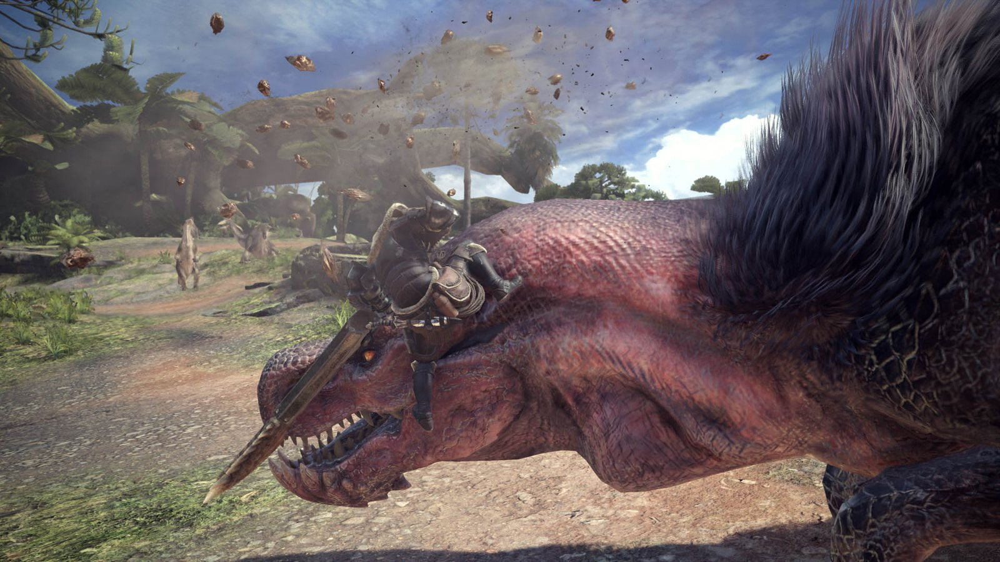
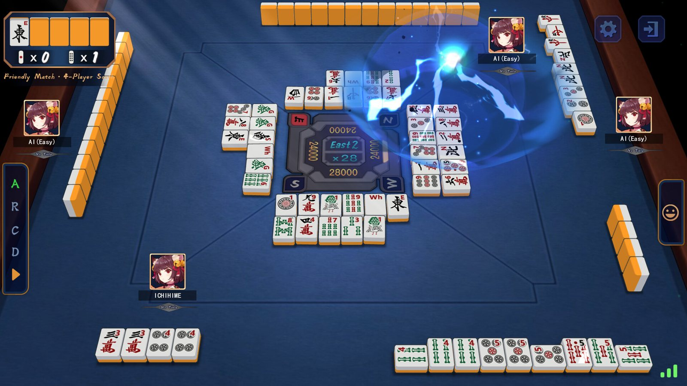

开放世界 RPG2011
上古卷轴 5：天际
给店主头上扣一个水桶，就能当着他的面把货架搬空。他全程毫无察觉。
病因NPC 的视线从头部发出，水桶挡住了这条射线。
STAGE 0-0开场 · 教学关
学术界的 AI 想赢，游戏里的 AI 想让你玩得爽。它要有破绽，会犯错，懂得演戏，还得在每帧十几毫秒的预算里想完，这点时间还要分给画面和物理。
所以游戏 AI 的评价标准很特别：让玩家觉得它聪明，比它真的聪明更重要。下面这些名场面，有的是它演砸了，有的是它演得太好了。
给店主头上扣一个水桶，就能当着他的面把货架搬空。他全程毫无察觉。
小人下了泳池，把梯子拆掉，他们就再也上不来了。这是全球玩家最熟练的恶作剧之一。
龙骑兵在狭窄路口原地转圈、互相卡位，被玩家亲切地称为「智障龙骑」。
刚才还在全图搜你，十几秒后自言自语一句「一定是风吧」，转身回去巡逻。
你一按喝药，Boss 立刻冲脸。玩家称之为「读指令」。这一条属于演得太好了。
对手换上来的宝可梦，有时偏偏最怕你。反编译代码的注释怀疑：挑替补时比较符号写反了。
抛开名词，游戏 AI 就是一个函数：每隔一帧或几帧，读入它感知到的局面，输出一个动作。最朴素的写法是一串 if：if 情况 do 策略。这个站里的大多数算法，回答的都是同一个问题：这串 if 怎么写得更好。
| 决策算法 = 评估 × 搜索 | 做法 | 对应关卡 |
|---|---|---|
| 评估：这个选项有多好 | 规则打分（人写公式），或者学出来的打分（强化学习） | 2-1 贪心 · 2-2 麻将何切 · 2-3 效用 AI |
| 搜索：往前看几步 | 推演到目的地；推演到对手也出招；随机模拟很多局 | 3-1 寻路 · 3-2 博弈树 |
| 两者混着用 | 搜到一定深度就停，用评估函数给叶子打分；MCTS 的模拟也可以只走几步再估分 | 3-2 的深度受限搜索、MCTS |
九个关卡按「回答哪个问题」分成四个世界。四个世界不是一个比一个高级：真实的游戏几乎都在混搭，比如行为树决定做什么，打分挑目标，A* 负责走路。
剧透一下最终 Boss 的弱点：让玩家觉得最「聪明」的 AI，往往不是算得最远的那个。
World 1 · 决策架构钢
刚才那边是不是有人？
……（15 秒后）一定是风吧。
《计算理论》里的有限自动机，是游戏 AI 里出场率最高的结构。形式化地说，它是一个四元组 M = (S, Σ, δ, s₀)：
任何时刻，NPC 只处于一个状态。每一帧它只做两件事：执行当前状态的行为，检查当前状态的出边有没有被触发。所以每帧的开销只和当前状态的出边有关，和状态总数无关。写成代码就是一个 switch：
switch (state) { case PATROL: followWaypoints(); if (heardNoise()) state = SUSPICIOUS; break; case SUSPICIOUS: walkTo(noisePos); if (seePlayer()) state = CHASE; else if (timer > 5) state = PATROL; // 一定是风吧 break; case CHASE: runTo(player); if (!seePlayer()) state = SEARCH; break; case SEARCH: lookAround(lastSeenPos); if (seePlayer()) state = CHASE; else if (timer > 10) state = PATROL; break; }
onEnter / onExit 回调，比如进入追击时播放一声「站住！」，离开时重置计时器。四只鬼共用一个三态状态机：追击、分散、受惊。第一关的节奏写死在计时器里：分散 7 秒 → 追击 20 秒 → 分散 7 秒 → 追击 20 秒 → 分散 5 秒 → 追击 20 秒 → 分散 5 秒 → 之后一直追。吃下大力丸，全员切到受惊，掉头乱跑。
守卫发现你时头顶冒出「!」，全场进入警戒；跟丢之后转入搜索，后来的作品里还会再降一级为戒备。每一级都有倒计时，走完才回到正常巡逻。
苦力怕的状态机小到能写在便利贴上：闲逛 → 发现玩家 → 追踪 → 靠近到 3 格内开始「嘶」→ 1.5 秒后爆炸。倒计时期间你跑出 7 格，或者躲开它的视线，它就熄火接着追。
你一按喝药，Boss 立刻冲脸；你一抬手放法术，Boss 立刻侧闪。玩家管这叫读指令。
拆开看：你按键的那一帧，角色就进入了「使用道具」或「攻击」状态。这个状态对游戏引擎来说是公开信息，Boss 的 AI 当然读得到。据玩家拆包分析，FromSoftware 的敌人 AI 用一种基于 Lua 的脚本语言（Havok Script）编写，由「目标（Goal）」和「中断（Interrupt）」组成。玩家出招、使用道具这类事件会触发中断，Boss 随即切换到另一套行动。
用状态机的话说，这就是一条由事件触发的转移。它不会读心，只是反应时间为零。设计师真正要调的，是给它加多少「假装反应慢」的延迟。
这也是个老传统了。街机厅里被《拳皇》Boss 虐过的人都懂，格斗游戏的 CPU 读指令已经读了三十年。
事件驱动的转移（示意）
// 玩家的状态变化会广播成事件 on 玩家状态变化(evt): if evt == "使用道具" and 距离(玩家) < 6m and 冷却完毕("突进斩"): state = PUNISH_DASH // 喝药？给你一刀
谁先动手：反应时间对比
人类的视觉反应时间一般在 200 毫秒上下。等你反应过来，AI 已经想了十几帧。
一个四状态的守卫，外加一个「抓获」结局。它负责决定做什么，走路交给 A* 寻路（3-1 会讲）。看看你能不能从它背后溜过去。
状态之间的转移边最多有 N × (N − 1) 条。4 个状态最多 12 条，8 个状态最多 56 条。策划每说一句「再加一个受伤状态」，你就得检查它和每个已有状态之间要不要连线。
常见的解法有三种。
① 分层状态机（HFSM）：来自 Harel 在 1987 年提出的状态图（Statecharts）。把「巡逻、怀疑」打包成父状态「非战斗」，「追击、搜索」打包成「战斗」。写在父状态上的一条边，对里面所有子状态都生效，比如「挨打 → 战斗」只写一次。转移边从 N² 级降到每一层各自的 n² 级。
② 下推自动机（栈式状态机）：被打断的状态先压栈，处理完再弹回来。受击硬直结束后，NPC 自动回到之前在做的事，不用给每个状态都连一条「受击 → 回去」。
③ 换一种结构：也就是下一关的行为树。
state 非战斗 { // 父状态，里面套一个子状态机 巡逻 ⇄ 怀疑 } state 战斗 { 追击 ⇄ 搜索 } 非战斗 --挨打 / 看清了--> 战斗 // 一条边，对两个子状态都生效 战斗 --跟丢 30 秒--> 非战斗
STAGE CLEAR状态机 = 几个格子 + 一堆箭头。简单、可靠，行为最容易预测。
World 1 · 决策架构草
能不能让小兵在队长死了以后，尖叫着逃跑？
程序：加个分支就行，不用再连十条线了。
行为树的每个节点被「Tick」一下，就返回三种结果之一：成功、失败、运行中。最基本的节点有四类：
越靠左（在下面的演示里是越靠上）的分支优先级越高。想加一个新行为，就把它插到合适的位置，不用和其他行为逐个连线。
还有两类常用节点。装饰器（Decorator）只有一个子节点，负责改写它的结果或执行方式：取反、重复 N 次、冷却 5 秒内不再执行。并行（Parallel）同时 Tick 所有子节点，再按「全部成功」或「任一成功」汇总，比如边移动边开火。条件节点要读的数据放在共享的黑板（Blackboard）里：感知系统往里写，行为树从里读。
||，顺序节点是短路的 &&。最坏要访问全部 N 个节点，O(N)；短路让实际访问的少得多：下面的演示有 15 个节点，一次 Tick 只访问 4 到 11 个。function tick(node): switch node.type: case SELECTOR: // 短路 OR for child in node.children: s = tick(child) if s != FAILURE: return s return FAILURE case SEQUENCE: // 短路 AND for child in node.children: s = tick(child) if s != SUCCESS: return s return SUCCESS case CONDITION: return node.test() ? SUCCESS : FAILURE case ACTION: return node.run() // 可能返回 RUNNING
动作返回「运行中」时，下一次 Tick 仍然从根开始，所以更高优先级的分支随时能打断它。虚幻引擎的行为树是事件驱动的：不每帧从根重新遍历，而是黑板上的值变化时，由装饰器的「观察者中止（Observer Aborts）」打断正在跑的低优先级分支，省掉大部分重复遍历。
在《怪物猎人：世界》里狩猎蛮颚龙，你会看到它的好几种「状态」：被闪光弹晃到，原地乱咬；体力耗尽，流着口水喘气，攻击变慢；血量很低，一瘸一拐地逃回巢穴睡觉；没发现猎人的时候，在领地里巡逻、找东西吃。
这些行为天然有先后：先处理突发状况，再考虑保命，然后才是战斗，最后是日常。把它们从左到右（演示里是从上到下）排进一个选择节点，就是下面那棵树。
想加「愤怒」？在「战斗」里插一个分支。想加「地盘争夺」？在「保命」和「战斗」之间插一个。其余节点一个都不用改。
卡普空没有公开怪物 AI 的实现。下面这棵树是按游戏里能观察到的行为，用行为树复刻的。

一次 Tick 走过的路径（发现猎人、体力耗尽）
根 · 选择 ├─ 先顾眼睛 → 被闪光弹晃到？ 失败 ├─ 保命要紧 → 快不行了？ 失败 └─ 战斗 ├─ 发现猎人？ 成功 └─ 怎么打 · 选择 ├─ 进攻 → 还有体力？ 失败 └─ 疲劳：流口水喘气 运行中
最后一支「巡逻领地」根本没被访问：「战斗」已经返回了运行中，根上的选择节点就停了。
上面那棵树，一共 15 个节点。切换右边「战场上发生了什么」，再 Tick 一次，看遍历走了哪条路、跳过了哪些分支。体力会随着进攻慢慢耗光，也可以直接点「耗光体力」。
Bungie 的 Damian Isla 在 GDC 2005 上分享了《光环 2》的 AI 架构，行为树从此在业界流行。最经典的表现：你干掉精英，旁边的咕噜人就会扔下阵地，尖叫着四散逃跑。
游戏有两层 AI。上层的导演知道你在哪，用一个「威胁值」决定异形离你多近；下层是异形自己的行为树，有 100 多个节点，其中很多一开始是锁着的，随着游戏推进逐个解锁。于是玩家会觉得：它学会翻柜子找我了！
虚幻引擎内置了可视化的行为树编辑器，配一块叫「黑板」的共享内存。策划拖拖节点就能搭出一个敌人，大量 3A 和独立游戏的敌人都长在这套工具里。
| 有限状态机 | 行为树 | |
|---|---|---|
| 关注点 | 我在哪个状态，下一步跳去哪 | 按优先级，现在该做什么 |
| 加一个新行为 | 和已有状态逐个考虑连线 | 在合适位置插一个分支 |
| 复用 | 难，逻辑散落在各个状态里 | 子树可以整棵复用 |
| 执行方式 | 每帧只跑当前状态 | 每帧从根节点重新遍历 |
| 典型用途 | 简单敌人、动画状态、UI 流程 | 3A 敌人、队友 AI |
STAGE CLEAR行为树 = 一棵按优先级排好的问答树。Tick 一次就是一次短路的深度优先遍历。
World 2 · 评估打分恶
现在最好的，就是最好的。以后的事，以后再说。
算法课上讲贪心，重点是证明它正确：得满足贪心选择性质和最优子结构。游戏 AI 不需要它正确，只需要它便宜、够用，偶尔犯点可爱的错。
游戏里的贪心几乎都长一个样：
四只鬼追你、训练家换宝可梦、雀魂里挑一张牌打、几百只怪朝你涌过来，用的都是这一行。
每只鬼走到路口时只做一件事：在能走的方向里（不许掉头），选一个离目标格直线距离最近的。四只鬼的区别，只在于目标格怎么选。它们的日文名把性格写得明明白白：追いかけ（追击者）、待ち伏せ（伏击者）、気まぐれ（善变）、お惚け（装傻）。
点击迷宫里的走廊，把自己放过去。选中画布后也能用方向键改朝向。
在《宝可梦 绿宝石》的反编译项目 pret/pokeemerald 里，AI 选招式就是标准的打分取最大：每个能用的招式先给 100 分，再由一串规则加减分，最后选分最高的，平分就随机挑一个。
换人也是贪心。如果你上一招打中它的是火、水、电属性，而它队里有能吸收这个属性的宝可梦（特性是引火、储水、蓄电），它就有一定概率换过去。它看的是你上一招打了什么，所以与其说它在读你，不如说它在记仇。
挑替补时，它会按属性相克给每只候选打分取最高。有意思的是，社区在这段代码旁边写了一条注释。
src/battle_ai_switch_items.c（节选）
/* Possible bug: this comparison gives the type that takes the most damage, when a "good" AI would want to select the type that takes the least damage. */ if (bestDmg < typeDmg) { bestDmg = typeDmg; bestMonId = i; }
翻译：这个比较挑出的是挨打最疼的那只，好的 AI 应该挑挨打最轻的。注释里还说，不确定这是失误，还是一个奇怪的设计。
所以对手换上来的那只偏偏最怕你，可能真的不是错觉。贪心本身没错，错在评分函数。
宝可梦的正式比赛（VGC）打双打：每边同时上场两只。对贪心来说，难在三个地方。
下面把 2023 年宝可梦世界锦标赛 VGC 冠军木村翔平的队伍交给贪心 AI，对手是亚军 Michael Kelsch 的队伍。
组合贪心把两只的招式两两配对再打分，就不会撞车了。可它仍然只看这一回合：对面会不会守住、会不会换人、谁先出手，它都不知道。再加上顺风（几回合内全队速度翻倍）、击掌奇袭（只在上场第一回合有效）、开场地、特性联动，按伤害打分的贪心根本顾不过来。这也是正作剧情里双打对手不多的原因之一：让 AI 把这些都考虑进去，设计起来难得多。
人类高手还会读换：你算准它会换上地面系来免疫电击，下一回合直接甩一个水系招式过去。想不被读，就得把对手的反应也算进去，这正是 3-2 博弈树要做的事。
每座塔都能设置攻击优先级：第一个、最后一个、最近的、最强的。每一帧它都只从射程内挑一个当前最优的目标来打。
满屏几百上千只怪，每只都只做一件事：朝你所在的方向挪一步。没有寻路，没有配合，靠数量淹没你。
STAGE CLEAR贪心 = 打分 + 取最大。好不好用，全看评分函数。
World 2 · 评估打分水
摸了一张牌，十四张里到底打哪张？
贪心 AI：打北。打完 2 向听，进张 40 张，全场最多。
贪心需要一个分数。何切的分数有两层：先比向听数，一样再比进张数。
和牌的基本形是 4 个面子 + 1 个雀头（一对）。这种形状的向听数可以这样算：
难点是同一手牌有很多种拆法：3456 可以拆成 345 + 6，也可以拆成 34 + 56，拆法不同，算出来的向听数也不同。程序用深度优先搜索把所有拆法试一遍，取最小的那个。
向听数：深度优先搜索所有拆法（和本页演示用的是同一套逻辑）
function 向听(c): // c[t] = 第 t 种牌有几张，一共 34 种 best = 8 function dfs(i, 面子, 搭子, 雀头): 跳过 c[i] == 0 的牌 if i == 34: // 每张牌都分好了组 best = min(best, 8 - 2*面子 - min(搭子, 4 - 面子) - 雀头) return if c[i] ≥ 3: 取刻子，dfs(i, 面子+1, 搭子, 雀头) if 能组成顺子 i,i+1,i+2: 取顺子，dfs(i, 面子+1, 搭子, 雀头) if 还没雀头 and c[i] ≥ 2: 取雀头，dfs(i, 面子, 搭子, 1) if 面子 + 搭子 < 4: 分别取对子 / 相邻两张 / 隔一张，dfs(i, 面子, 搭子+1, 雀头) 把这张当孤张丢掉，dfs(i, 面子, 搭子, 雀头) // 每次 dfs 回来都把拿走的牌放回 c（回溯） dfs(0, 0, 0, 0) return min(best, 七对子向听(c))
function 何切(手牌): // 手牌 14 张 for d in 手牌里的每一种牌: s = 向听(手牌 - d) 进张 = 0 for t in 34 种牌: // 假设下一张摸到 t if 向听(手牌 - d + t) < s: 进张 += 4 - 手牌里已有的 t 的张数 记下 (d, s, 进张) return 按 (s 从小到大, 进张 从多到少) 排第一的 d
打北之后：二三四万、345 筒是 2 个面子；六七万（两面）、12 条（边张）、79 条（嵌张）是 3 个搭子，但面子 + 搭子最多算 4，所以只算 2 个；剩下一张 5 筒落单。
| 打出 | 打完向听 | 进张 | 说明 |
|---|---|---|---|
| 北 | 2 | 40 | 孤立的字牌，没用：贪心选它 |
| 5 筒 | 2 | 37 | 3455 筒拆掉一张 5 |
| 1 / 2 / 7 / 9 条 | 2 | 24 | 拆掉边张或嵌张 |
| 六 / 七万 | 2 | 20 | 拆掉两面搭子 |
| 3 / 4 筒 | 2 | 16 | 拆坏 345 筒 |
| 四万 | 3 | 56 | 进张最多，但向听退了一步 |
| 二 / 三万 | 3 | 52 | 拆坏面子，向听退一步 |
打四万的进张有 56 张，比打北还多。但它拆坏了面子，向听数退到 3。贪心先比向听、再比进张，所以不选它。这张表由下面演示里的程序算出，打开演示就是这道题。
默认就是上面的例题。点任意一张牌打出去，下面会告诉你贪心怎么看；也可以让贪心一路打到和牌。这里没有对手，只练「牌效」。
它只看自己的手牌。别人已经听牌，它还会为了多几张进张，打出一张很可能点炮的牌。
立直麻将没有役不能荣和。它只追求最快听牌，可能听成一个没有役的形状，也可能为了快放弃大牌。
进张只扣掉了自己手里的牌。牌河里、别人碰杠出来的牌，其实也摸不到了。
进张只问「下一张能不能让向听数减 1」，不问减完之后的形状好不好。两种打法进张一样，一种将来能听两面（8 张），一种只能听嵌张（4 张），它分不出来。
微软亚洲研究院的 Suphx 在天凤平台和人类对局，2019 年达到十段，是第一个做到的 AI。它的分数不是人手写的：先用人类高手的牌谱做监督学习，再通过大量自我对局做强化学习，把「这张牌打出去有多好」学出来。
它看的信息也比贪心多得多：别人的弃牌和副露、谁立直了、当前点数和名次。论文里提到，它的长处之一就是防守。
所以这一关的贪心是起点，不是终点：向听和进张是最基本的特征，往上加防守、打点、局势，再往上就是让机器自己学打分。

STAGE CLEAR何切 = 先比向听数，再比进张数。把「牌效」变成两个能算的数字，贪心就能用了。
World 2 · 评估打分一般
饿了吃饭，困了睡觉，无聊了打游戏。
憋不住了的时候……其他事先放一放。
行为树按固定顺序问问题，效用 AI 则把所有选项一起摆上桌打分。业界常把这套做法叫「效用理论」，Dave Mark 和 Kevin Dill 在 GDC 2010 的演讲里系统地讲过。
曲线是效用 AI 的灵魂。有点饿时，吃饭的欲望很低；饿过某个点之后，吃饭会突然变成头等大事。
只取最高分的话，两件事分数接近时会出现反复横跳：刚走到冰箱前，又觉得该去睡觉。常见的补丁有两个：给正在做的事加一点惯性分，或者从最高的几项里按分数加权随机，让小人看起来没那么像机器。
Q(s,a) ← Q(s,a) + α·[r + γ·max Q(s′,a′) − Q(s,a)] 修正一点（α 是学习率，γ 是对未来奖励打的折扣）。学好以后，决策还是「取分数最高的那个」，只是分数是练出来的。AlphaGo、麻将 AI Suphx、GT 赛车的 GT Sophy 都属于这一类。商业游戏的 NPC 仍然很少这么做，原因见结算页。五种需求会随时间下降。小人每次闲下来，就给六个行动打分，挑最高的去做。拖动左边的需求条，可以直接改他的状态。
小人有饥饿、膀胱、精力、娱乐、卫生等需求。家里的每件物品都会向周围「广播」自己能满足什么：冰箱喊「我能解决饥饿」，电视喊「我能解闷」。小人给所有选项打分，从高分里挑一个去做。
每个 AI 领袖都有一组性格参数，决定它多爱打仗、多爱造奇观、多爱核武。传说初代《文明》里甘地的侵略值是 1，进入民主后减 2，无符号整数下溢成 255，和平主义者开始满地扔核弹。席德·梅尔在 2020 年的回忆录里澄清：这个 bug 并不存在。不过《文明 5》真的把甘地的核武偏好设成了 12，全场最高，把传说做成了彩蛋。
STAGE CLEAR效用 AI = 给所有选项打分 + 取最大。本质是一个评分函数很讲究的贪心。
World 3 · 搜索地面
我要去那边。
……我怎么又绕回原地了？
把地图看成一张图：格子是节点，相邻格子之间连一条边，边上写着走过去的代价。四个算法都维护一张「待探索」表（open 表），每次取出排在最前面的格子展开，再把它的邻居放进表里。区别只在按什么排队。
| 算法 | 按什么排队 | 保证最短？ | 时间复杂度 |
|---|---|---|---|
| BFS 广度优先 | 步数（先进先出队列） | 只在每步代价都一样时 | O(V + E) |
| Dijkstra | g | 是（边的代价不能为负） | O((V + E) log V) |
| 贪心最佳优先 | h | 否，还会被 U 型墙骗进去 | 最坏同上，通常很快 |
| A* | g + h | h 可采纳时是 | 最坏同上，h 越准越快 |
V 是格子数，E 是边数；带 log 的是用二叉堆实现优先队列的情况。
寻路属于 NPC 的执行层：决策层说「去追他」，寻路负责「怎么绕过箱子」。它放在「搜索」这个世界，是因为它和下一关的博弈树一样，都是在图上搜索。
A* 伪代码（把排队规则换掉，就是另外三个算法）
function A_star(start, goal): open = 优先队列，按 f = g + h 从小到大 // BFS 用普通队列，Dijkstra 按 g，贪心按 h g[start] = 0; open.push(start) while open 不空: n = open.pop() // 取出 f 最小的 if n == goal: return 沿 parent 回溯出路径 for m in neighbors(n): new_g = g[n] + cost(n, m) if m 没见过 or new_g < g[m]: // 找到了更便宜的走法 g[m] = new_g; parent[m] = n open.push(m, f = new_g + h(m)) return 无路可走 // 模拟人生：拆了梯子的泳池
|dx| + |dy|，它既可采纳又一致。两个极端：h 恒为 0 时，A* 退化成 Dijkstra；h 恰好等于真实代价时，A* 只展开最短路上的格子。游戏里还常用加权 A*（f = g + w·h，w > 1）：路径最多是最短路的 w 倍，但搜得快得多。玩家看不出差别，CPU 看得出来。先选「U 型陷阱」，分别用贪心和 A* 跑一遍，看看谁被骗了。再换「沼泽地」，比较 BFS 和 Dijkstra 的路径代价。
| 算法 | 展开节点 | 路径代价 |
|---|---|---|
| 点「四个一起比」 | ||
在上面的演示里选「沼泽地」，点「四个一起比」，就能得到这组数字。沼泽每格代价 5，普通格代价 1。
| 算法 | 展开节点 | 路径代价 | 说明 |
|---|---|---|---|
| BFS | 360 | 47 | 只数步数，直接蹚过沼泽 |
| Dijkstra | 424 | 37 | 路最短，但向四面八方都找，展开最多 |
| 贪心最佳优先 | 24 | 47 | 展开最少，可路不是最短 |
| A* | 188 | 37 | 和 Dijkstra 一样短，展开的不到它的一半 |
龙骑兵体型大，走窄路时容易和友军互相卡住，经常在路口原地转圈。玩家口中的「智障龙骑」由此而来，打仗时得时刻盯着它们，免得在路口堵成一团。
3D 游戏一般不在格子上寻路，而是把能走的地面切成一块块凸多边形，在多边形的邻接图上跑 A*，最后把折线拉直。开源库 Recast & Detour 被大量引擎采用。
几百个单位要去同一个地方时，与其每个都跑一遍 A*，不如从终点出发算一张「方向场」：每个格子都写着往哪走离终点更近，单位顺着箭头流过去就行。
STAGE CLEAR寻路 = 一个优先队列 + 一条排队规则。A* 按「已付代价 + 对未来的估计」排队，估计越准，搜得越少。
World 3 · 搜索格斗幽灵
你以为我会换人？我预判了你的预判。
轮到我（MAX）时，选分数最高的分支；轮到你（MIN）时，假设你会选让我分数最低的分支。从叶子开始一层层往上倒推，就得到了这一步的最优解。
α-β 剪枝：搜索时记两个数。α 是我方已经确保能拿到的最低分，β 是对手已经确保能把我压到的最高分。一旦某个分支里 α ≥ β，说明双方都不会让棋局走到这里，剩下的子节点不用看了。剪枝不改变结果。先搜到好棋，后面就剪得多：最好情况只需看 O(bd/2) 个节点（Knuth 与 Moore，1975），同样的时间能多搜一倍的深度。
感受一下规模：井字棋的完整博弈树只有 549,946 个节点，电脑一眨眼就搜完；国际象棋的博弈树复杂度约为 10120（香农数），把宇宙里的原子都拿来当草稿纸也不够。
带 α-β 剪枝的 Minimax
function minimax(s, depth, α, β, isMax): if depth == 0 or s.isOver(): return evaluate(s) if isMax: v = -∞ for m in s.moves(): v = max(v, minimax(s.play(m), depth - 1, α, β, false)) α = max(α, v) if α >= β: break // 对手不会让你走到这里 return v else: v = +∞ for m in s.moves(): v = min(v, minimax(s.play(m), depth - 1, α, β, true)) β = min(β, v) if α >= β: break // 你也不会走到这里 return v
国际象棋搜不到终局，那就搜到第 d 层停下，用一个评估函数 eval(s) 给这些「半路上的局面」估一个分，代替真正的胜负。深蓝就是这么做的：α-β 搜十几层，叶子交给评估函数，它把约 8000 种棋形特征加权求和（Campbell 等，2002）。
本页井字棋的「深度 2」难度，用的评估函数来自《人工智能：一种现代方法》的习题：
围棋每一步大约有 250 种走法，一盘要下 150 手左右，Minimax 根本搜不动，也很难写出靠谱的评估函数。蒙特卡洛树搜索的思路很朴素：不知道哪步好，那就每步都随便下完很多盘，看哪步赢得多。为了不把时间浪费在烂棋上，它每轮做四件事：
前两种不往后看；「深度 2」只看两步，剩下的交给评估函数；Minimax 和 α-β 搜到终局，下法完全一样，比比它们各看了多少局面；MCTS 靠随机模拟估胜率，把模拟次数调到 100 局，它就会犯错。下到一半时点「对比全部算法」，看六种 AI 替你下这一步会怎么选。
你先下。友情提示：在 Minimax 和 α-β 难度下，平局就是人类的最好成绩。
AI 上一步：还没下
草稿纸上是 AI 上一步给每个空格打的分，带框的是它最后的选择。Minimax 写每步的结局，数字越大赢得越快；α-β 里的「≤」表示这步被剪枝了，只知道它不比已经找到的好；深度 2 写评估函数的估分；MCTS 写胜率和试了几次。
| 算法 | 下在 | 计算量 | 用时 | 这步的结局（之后双方都完美） |
|---|---|---|---|---|
| 下几步之后点「对比全部算法」，空棋盘也可以比。 | ||||
实测 ①：α-β 少看了多少局面
| 局面 | Minimax | α-β | 省下 |
|---|---|---|---|
| 空棋盘，X 先下 | 549,946 | 约 21,500 | 96% |
| X 下在正中，轮到 O | 55,505 | 约 3,100 | 94% |
| X 下在角上，轮到 O | 59,705 | 约 2,600 | 96% |
| X 下在边上，轮到 O | 63,905 | 约 3,000 | 95% |
单位是搜索过的局面数。α-β 的走法顺序随机打乱，取 200 次的平均；它选出的棋和 Minimax 一样好。
实测 ②：对上完美的玩家，各 AI 输了多少
| AI | 输的比例 |
|---|---|
| 随机 | 87.0% |
| 贪心 | 47.5% |
| MCTS · 每步 100 局 | 28.7% |
| MCTS · 每步 1,000 局 | 2.7% |
| MCTS · 每步 10,000 局 | 0（200 盘） |
| 深度 2 + 评估 | 0（穷举证明） |
| Minimax / α-β | 0（理论保证） |
「完美的玩家」每步都从最优走法里随机挑一个；双方轮流先手，每种 AI 各下 1,000 盘。
IBM 的深蓝用 α-β 搜索加专用芯片，每秒评估约 2 亿个局面，击败了国际象棋世界冠军卡斯帕罗夫。
蒙特卡洛树搜索加神经网络，4:1 击败李世石。神经网络负责告诉 MCTS 哪些分支值得看、局面大概谁占优。
战役地图上的 AI 用蒙特卡洛树搜索来做决策，被认为是 MCTS 第一次进入 3A 游戏。为了在有限的时间和内存里算完，开发者对树的规模和分支做了大量裁剪。
人类高手的读招、读换，就是在脑子里跑两三层的博弈树：他会换人吗？他知道我知道他会换人吗？
STAGE CLEAR博弈树 = 假设对手也很聪明。剪枝、评估函数和随机模拟让它算得动。
World 4 · 群体与全局
谁是领头的？不知道。我只看旁边那几只。
没有任何一只鸟知道「鸟群」长什么样，整体的形态是从局部规则里涌现出来的。
复杂度：每只鸟都和其他所有鸟比一遍距离，每帧 O(n²)。下面的演示在电脑上有 115 只鸟（手机上 70 只），每帧约 1.3 万次距离计算，还算得动。鸟再多，就把地图切成边长为 r 的格子，每只鸟只查自己和周围 8 个格子里的邻居，平均降到接近 O(n)。
Reynolds 后来又整理了一套操控行为（Steering Behaviors）：追逐、逃离、到达时减速、闲逛、预判拦截……2-1 里《吸血鬼幸存者》的怪，就是一大群只会「追逐」的个体。
拖动三条规则的权重，或者直接点预设。打开「显示一只鸟的视野」，可以看到它到底在看谁。
高亮的那只鸟：圆圈是它的视野，连线是它这一帧参考的邻居。
片中的蝙蝠群和企鹅大军，用的是在 Boids 原始程序基础上修改的群体模拟。这是它最早的大银幕亮相之一。
你走过草地时惊飞的鸟群、潜水时绕着你游的鱼群、洞穴里一大片涌过来的虫群，大多是这类局部规则，再加一点避障。
STAGE CLEAR群聚 = 每个个体只看邻居。整体的「智能」是涌现出来的。
World 4 · 群体与全局妖精
你以为你在和丧尸战斗。其实我在给你拍电影。
前面所有算法都在回答「这个 NPC 该做什么」。AI 导演回答的是另一个问题：玩家现在需要什么？
它手里的工具通常很朴素：控制刷怪的数量和时机，调整道具掉落，给落后的一方一点补偿，在玩家快撑不住时悄悄松一松手。输入是玩家的状态，输出是整局游戏的节奏。
Valve 的 AI 导演会追踪每位幸存者的紧张度：被打、倒地、身边有丧尸被打死，都会让它上涨；没有战斗时，它慢慢回落。导演本身是一个四状态的状态机：积累 → 维持峰值 → 峰值消退 → 放松，然后循环。真实游戏里，峰值维持 3~5 秒，放松阶段有 30~45 秒。
导演根据紧张度切换阶段、决定刷多少丧尸。用上面的按钮给幸存者「加点压力」，看导演怎么反应。
上菜！
电脑车手落后时会偷偷加速，领先时会放慢，俗称「橡皮筋」。道具也按名次加权：越靠后越容易抽到强力道具；跑在第一的人，还得提防专打第一名的蓝色龟壳。
游戏里有一个看不见的难度等级，会根据你的表现在后台浮动。打得好，敌人更凶、伤害更高；老是死，敌人就变温柔。很多玩家通关了都不知道它的存在。
同一关死太多次，游戏会悄悄送你一个阿库阿库面具，或者多给你一个存档点。帮你一把，但不告诉你。
1-2 里提到的上层导演，用「威胁值」衡量你被逼得有多紧。威胁值高到一定程度，导演就让异形去别处转转，给你一点喘息的空间。
从 GBA 上的《封印之剑》开始，多部《火焰纹章》的命中判定会掷两个 0~99 的随机数取平均，平均值小于显示命中率才算命中。两个数取平均，结果更容易落在中间，于是高命中更稳，低命中更难蒙中。
人对概率的直觉本来就是歪的：总觉得 70% 应该「基本必中」，30% 应该「基本不中」。游戏顺着你的直觉，悄悄改了概率。
STAGE CLEARAI 导演 = 盯着玩家的情绪，调度整局游戏。最好的 AI，是你没发现的那个。
All Clear · 通关结算
九个关卡都打通了？来，清点一下战利品。
| 关卡 | 算法 | 一句话 | 复杂度 / 开销 | 代表作 | 最适合 |
|---|---|---|---|---|---|
| 1-1 | 有限状态机 | 几个格子 + 一堆箭头 | 每帧只查当前状态的出边 | 吃豆人、合金装备 | 行为少、要可预测 |
| 1-2 | 行为树 | 按优先级排好的问答树 | 每次 Tick 最坏 O(N) | 光环 2、异形：隔离 | 行为多、要复用 |
| 2-1 | 贪心 | 打分取最大 | O(候选数) | 吃豆人、宝可梦 | 便宜、单位多 |
| 2-2 | 麻将何切 | 先比向听，再比进张 | 每次几百次拆牌搜索 | 雀魂、天凤 | 规则复杂，但能量化 |
| 2-3 | 效用 AI | 讲究的打分 + 取最大 | O(行动数 × 考虑因素) | 模拟人生、文明 | 多种需求权衡 |
| 3-1 | 寻路 | 已付代价 + 剩余估计 | O((V + E) log V) | 星际争霸、几乎所有游戏 | 从 A 走到 B |
| 3-2 | 博弈树 | 假设对手也聪明 | O(bd)，α-β 最好 O(bd/2) | 深蓝、AlphaGo | 回合制对抗 |
| 4-1 | 群聚 | 只看邻居 | 两两比较 O(n²)，分格子约 O(n) | 鸟群、鱼群 | 成群的生物 |
| 4-2 | AI 导演 | 调度玩家的情绪 | 很便宜，只调几个数 | 求生之路 | 节奏和难度 |
给你的 NPC 挑一个脑子。点右边的答案可以跳回对应关卡。
游戏 AI 的终极目标：用尽量便宜的算法，制造「它很聪明」的错觉，然后让你赢。
感谢聆听。还有问题？投个币。
PRESS START TO ASK